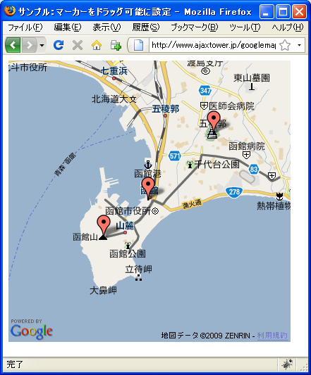
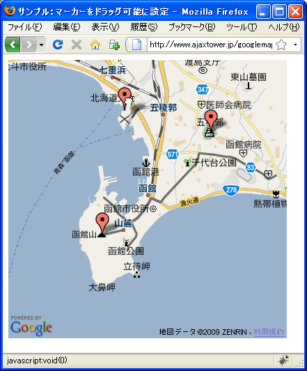
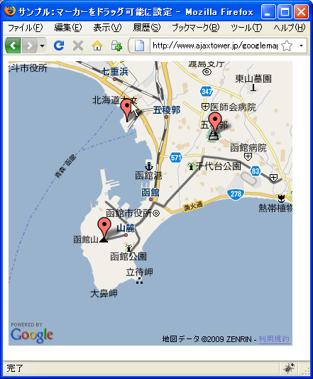

マーカーをドラッグ可能に設定
地図上に設置されたマーカーを利用者がドラッグして動かす事ができるように設定する方法を確認します。GMarkerクラスのコンストラクタ関数の2番目の引数で指定します。
GMarker(latlng:GLatLng, opts?:GMarkerOptions)
GMarkerOptionsクラスで定義されているプロパティの中でdraggableプロパティに値を設定します。
draggableプロパティ
マーカーがドラッグ可能かどうかを切り替えます。ドラッグできるように設定さ れたマーカーは、クリック可能なマーカーよりも、その設定に多くのリソースを 必要とします。ドラッグ可能マーカーは、デフォルトでクリック可能でバウンド 機能と自動移動機能が有効になっています。このオプションのデフォルト値は、 falseです。 値： Boolean
マーカーをドラッグ可能にするにはdraggableプロパティにtrueを設定して下さい。
実際には次のように記述します。
var map = new GMap2(document.getElementById("map"));
map.setCenter(new GLatLng(35.172304,136.908306), 15);
var point = new GLatLng(35.680481,139.767036);
var opts = {draggable:true};
var marker = new GMarker(point, opts);
map.addOverlay(marker);
マーカーをドラッグ可能にした場合に、追加の設定としてdragCrossMoveプロパティ、bouncyプロパティ、autoPanプロパティなどに値を設定することができます。順に説明していきます。
dragCrossMoveプロパティ
draggableプロパティにtrueを設定した上で、さらにdragCrossMoveプロパティにtrueを設定するとマーカーをドラッグ開始した時の挙動が変わります。
dragCrossMoveプロパティ
マーカーをドラッグすると、マーカーが浮き上がってカーソルから離れます。こ の値を true に設定すると、マーカーをカーソルの下に維持し、代わりにクロス を下に移動します。このオプションのデフォルト値は、falseです。 値： Boolean
dragCrossMoveプロパティがfalseの場合、ドラッグを開始するとマーカーそのものが少し浮き上がり、マーカーが指し示す地点を表すクラスの表示位置は同じ場所から開始されるのですが、このプロパティの値をtrueに設定するとドラッグを開始した時にマーカーの位置はそのままで、クラスの位置を少し下へずらしてドラッグが開始されます。
気をつけて見てみないと違いが分からないかもしれません。
bouncyプロパティ
bouncyプロパティはマーカーのドラッグが終わりマウスを放した時にマーカーがバウンドするかどうかを設定します。
bouncyプロパティ
ドラッグ終了後にマーカーがバウンドするかどうかを切り替えます。このオプ ションのデフォルト値は、falseです。 値： Boolean
bouncyプロパティがtrueの場合、ドラッグの後でマウスを放すとマーカーがバウンドするように地図に設置されます。このプロパティの値をfalseに設定するとドラッグの後でマウスを話すとマーカーはそのまま地図に設置されます。
autoPanプロパティ
autoPanプロパティはマーカーをドラッグしたまま地図の範囲外へマウスを移動させた時に自動的に地図がスクロールして切り替わるかどうかを設定します。
autoPanプロパティ
マーカーを地図の端付近でドラッグすると、地図が自動的に移動します。マー カーがドラッグ可能な場合は、このオプションのデフォルト値は true です。 値： Boolean
autoPanプロパティがtrueの場合、ドラッグしたまま地図の範囲外へマウスを移動すると地図が自動的に移動します。このプロパティの値をfalseに設定すると地図は移動されず固定のままとなります。
サンプルプログラム
では試してみます。
function initialize() {
if (GBrowserIsCompatible()) {
var map = new GMap2(document.getElementById("map_canvas"));
map.setCenter(new GLatLng(41.7724,140.72628), 12);
var opts1 = {draggable:true};
var opts2 = {draggable:true, autoPan:false};
var opts3 = {draggable:true, bouncy:false};
var marker1 = new GMarker(new GLatLng(41.75886,140.703535), opts1);
var marker2 = new GMarker(new GLatLng(41.79672,140.757179), opts2);
var marker3 = new GMarker(new GLatLng(41.772644,140.725315), opts3);
map.addOverlay(marker1);
map.addOverlay(marker2);
map.addOverlay(marker3);
}
}
<!DOCTYPE html "-//W3C//DTD XHTML 1.0 Strict//EN"
"http://www.w3.org/TR/xhtml1/DTD/xhtml1-strict.dtd">
<html xmlns="http://www.w3.org/1999/xhtml">
<head>
<meta http-equiv="content-type" content="text/html; charset=UTF-8"/>
<title>サンプル：マーカーをドラッグ可能に設定</title>
<script src="http://maps.google.com/maps?file=api&v=2&key=(key)&sensor=false"
type="text/javascript" charset="utf-8"></script>
<script src="./js/code4_1.js" type="text/javascript"></script>
</head>
<body onload="initialize()" onunload="GUnload()">
<div id="map_canvas" style="width: 400px; height: 400px"></div>
</body>
</html>
ではブラウザで上記のURLを見てみます。

今回全てのマーカーをドラッグ可能にしていますので、地図上に設置されたマーカーをドラッグして動かすことができます。

マーカーをドラッグ中は、マーカーが設置される地点にクラスの図形がマーカーの下に表示されます。このクロスの中央の点が新しいマーカーの設置場所になるようにマーカーをドラッグし、移動が完了したらマウスを放して下さい。

( Written by Tatsuo Ikura )

著者 / TATSUO IKURA
初心者～中級者の方を対象としたプログラミング方法や開発環境の構築の解説を行うサイトの運営を行っています。